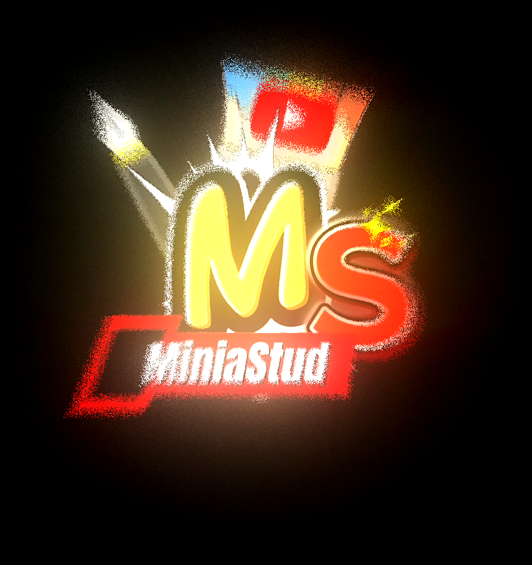

MiniaStudio ouvre officiellement les demandes de recrutement ! 🎨
Nous recherchons des graphistes capables de réaliser des miniatures YouTube et souhaitant rejoindre l'équipe.
🔹 COMMENT ÇA FONCTIONNE ?
1️⃣ Ouvrez un ticket dans le salon prévu à cet effet. voir pour plus d'informations
2️⃣ Présentez-vous et indiquez votre expérience. (ia interdite)
3️⃣ Envoyez quelques exemples de vos créations.
4️⃣ L'équipe étudiera votre candidature.
5️⃣ Si votre profil est retenu, nous vous expliquerons la suite du fonctionnement.
🎨 CE QUE NOUS RECHERCHONS
• Des personnes motivées
• Créatives et sérieuses
• Capables de respecter les demandes des clients
• Avec un minimum de connaissances en création de miniatures
• Débutants acceptés si les créations sont de qualité
⚠️ À SAVOIR
Le recrutement ne garantit pas une intégration dans l'équipe. Chaque candidature sera étudiée individuellement. Et ne vous aller disposé d'aucun salaire.
📩 Tu souhaites rejoindre l'équipe ?
Ouvre simplement un ticket et présente-nous ton travail !
Merci à tous ceux qui souhaitent participer au développement de MiniaStudio. ❤️
📢 Information importante – Demandes de miniatures
À partir de maintenant, je n’accepte plus les demandes en messages privés.
Pour toute demande de miniature, merci de passer uniquement par le serveur MiniaStudio via le système de tickets.
Cela me permet :
• D’être mieux organisé
• De répondre plus rapidement
• D’assurer un suivi propre des commandes
Toute demande envoyée en MP ne sera plus traitée.
Merci de votre compréhension 🙏
Rejoignez le serveur pour faire votre demande officiellement.